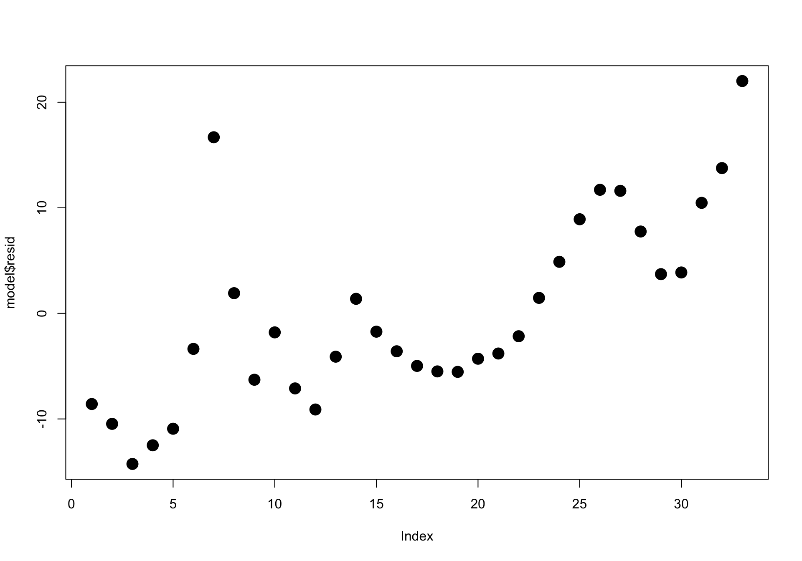
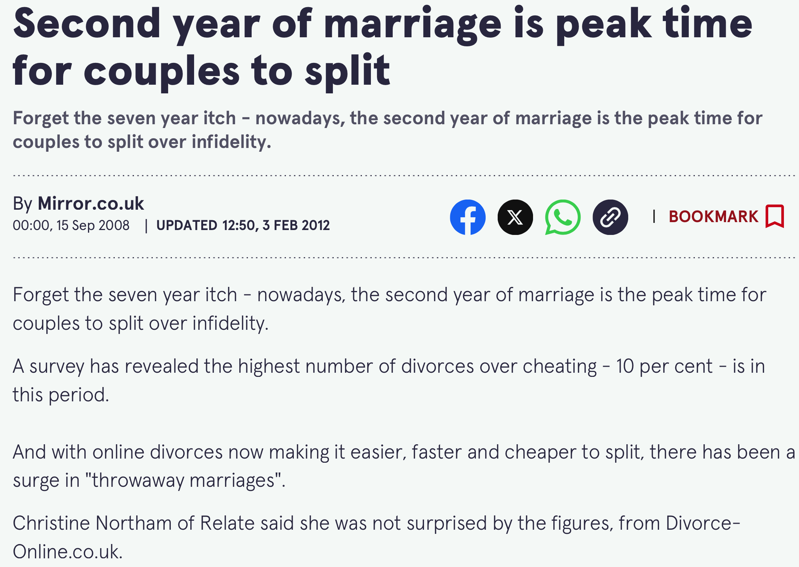
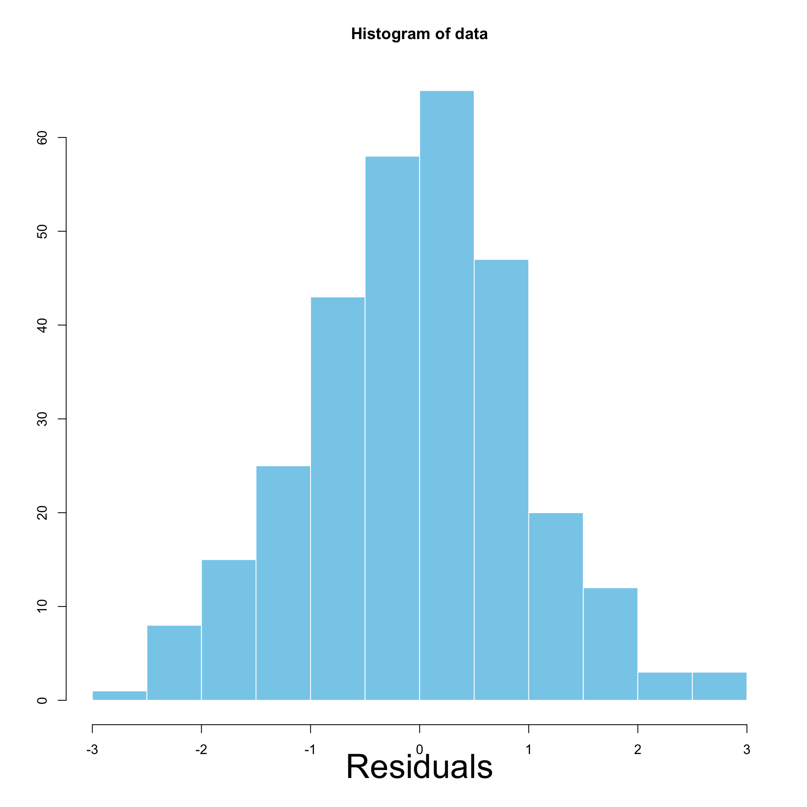
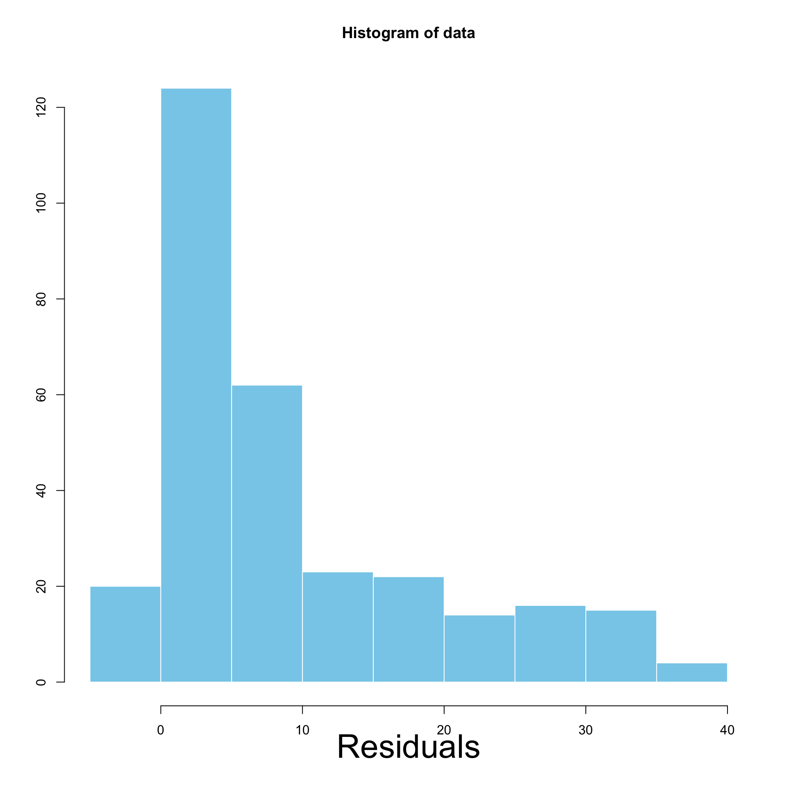
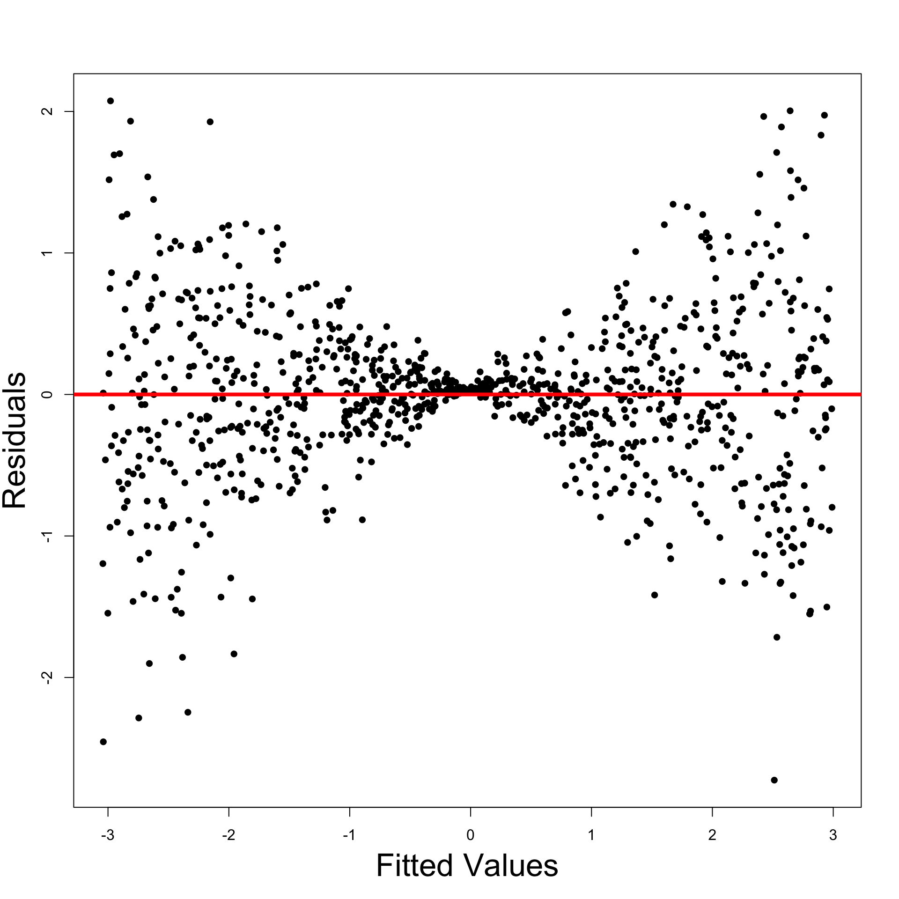
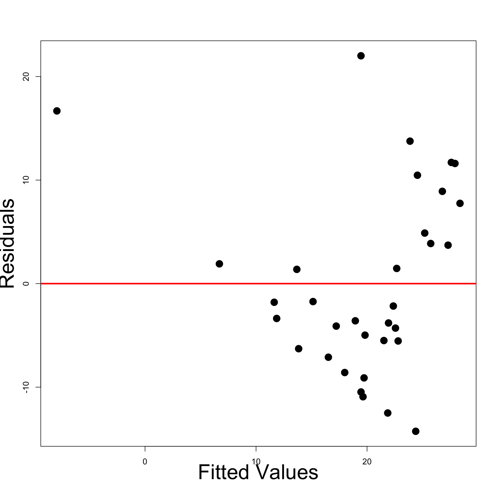
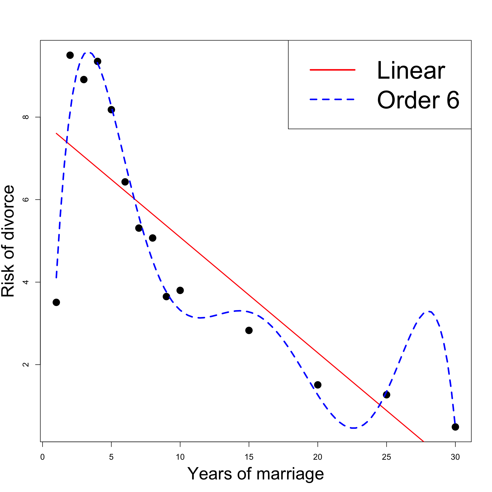
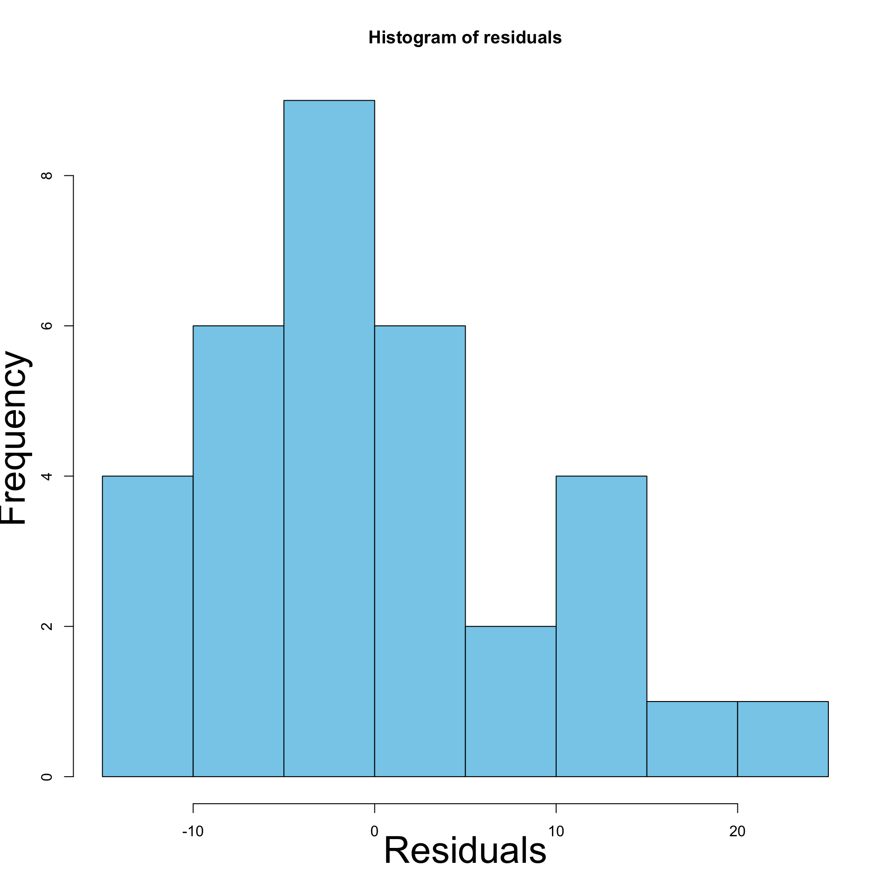
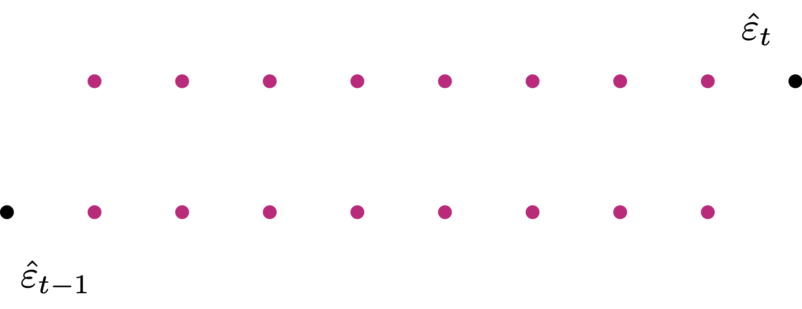
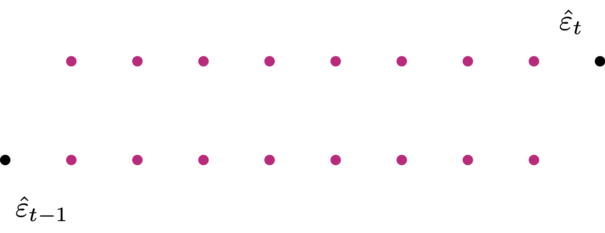

GNP.deflator GNP Unemployed Armed.Forces Population Year Employed
1947 83.0 234.289 235.6 159.0 107.608 1947 60.323
1948 88.5 259.426 232.5 145.6 108.632 1948 61.122
1949 88.2 258.054 368.2 161.6 109.773 1949 60.171Statistical Models
Lecture 10
Lecture 10:
Model Selection &
Regression Assumptions
Outline of Lecture 10
Model Selection
Examples of Model Selection
Regression Assumptions
Heteroscedasticity
Autocorrelation
Part 1:
Model Selection
Testing regression parameters
Summary: In Lecture 10 we have studied t-test and F-test for regression parameters:
- t-test: Consider the general linear regression model
Y_i = \beta_1 z_{i1} + \ldots + \beta_{ip} z_{ip} + \varepsilon_i \,, \qquad \varepsilon_i \, \text{ iid } \, N(0, \sigma^2)
- We have that
Z_j \,\, \text{ affects } \,\, Y \qquad \iff \qquad \beta_j \neq 0
- To see if Z_j affects Y, we introduced t-test for the hypothesis
\begin{align*} H_0 \colon & \beta_j = 0 \\ H_1 \colon & \beta_j \neq 0 \end{align*}
Testing regression parameters
- F-test: We considered two nested multiple regression models \begin{align*} \textbf{Model 1:} & \qquad Y_ i= \beta_1 + \varepsilon_i \\[10pt] \textbf{Model 2:} & \qquad Y_ i= \beta_1 + \beta_2 x_{i2}+ \ldots + \beta_p x_{ip} + \varepsilon_i \end{align*}
- We tested the Overall Significance of the parameters \beta_2 , \ldots, \beta_p
- This means choosing which model makes better predictions
- The comparison is achieved with F-test for the hypothesis
\begin{align*} H_0 & \colon \, \beta_2 = \beta_3 = \ldots = \beta_p = 0 \\ H_1 & \colon \text{ At least one of the } \beta_i \text{ is non-zero} \end{align*}
More general nested models
Consider the more general nested multiple regression models
\begin{align*} \textbf{Model 1:} & \quad Y_ i =\beta_1 + \beta_2 x_{i2}+ \ldots + \beta_{k} x_{ik} + \varepsilon_i \\[10pt] \textbf{Model 2:} & \quad Y_ i= \beta_1 + \beta_2 x_{i2}+ \ldots + \beta_{k} x_{ik} + \beta_{k + 1} x_{i(k + 1)} + \ldots + \beta_{p} x_{ip} + \varepsilon_i \end{align*}
Model 1 has k parameters
Model 2 has p parameters, with p > k
The two models coincide if and only if all the extra parameters are zero
\beta_{k + 1} = \beta_{k + 2} = \ldots = \beta_p = 0
Model Selection
Consider the more general nested multiple regression models
\begin{align*} \textbf{Model 1:} & \quad Y_ i =\beta_1 + \beta_2 x_{i2}+ \ldots + \beta_{k} x_{ik} + \varepsilon_i \\[10pt] \textbf{Model 2:} & \quad Y_ i= \beta_1 + \beta_2 x_{i2}+ \ldots + \beta_{k} x_{ik} + \beta_{k + 1} x_{i(k + 1)} + \ldots + \beta_{p} x_{ip} + \varepsilon_i \end{align*}
Question: How do we decide which model is better?
Answer: Test hypothesis for Model Selection
\begin{align*} H_0 \colon & \, \beta_{k+1} = \beta_{k+2} = \ldots = \beta_p = 0 \\[5pt] H_1 \colon & \, \text{ At least one among } \beta_{k+1}, \ldots, \beta_p \text{ is non-zero} \end{align*}
- H_0 is in favor of Model 1 \qquad \quad H_1 is in favor of Model 2
Comparing the two Models
Consider the more general nested multiple regression models
\begin{align*} \textbf{Model 1:} & \quad Y_ i =\beta_1 + \beta_2 x_{i2}+ \ldots + \beta_{k} x_{ik} + \varepsilon_i \\[10pt] \textbf{Model 2:} & \quad Y_ i= \beta_1 + \beta_2 x_{i2}+ \ldots + \beta_{k} x_{ik} + \beta_{k + 1} x_{i(k + 1)} + \ldots + \beta_{p} x_{ip} + \varepsilon_i \end{align*}
Goal: Formulate a statistic to decide between the 2 Models
First, calculate ML Estimators \hat{\beta}^1 and \hat{\beta}^2 for Models 1 and 2, respectively
With the MLEs, define the predictions for the two models
\begin{align*} \hat y_i^1 & := \hat{\beta}_1^{1} + \hat{\beta}_2^1 x_{i2}+ \ldots + \hat{\beta}_{k}^1 x_{ik} \\[10pt] \hat y_i^2 & := \hat{\beta}_1^2 + \hat{\beta}_2^2 x_{i2}+ \ldots + \hat{\beta}_{k}^2 x_{ik} + \hat{\beta}_{k + 1}^2 x_{i(k + 1)} + \ldots + \hat{\beta}_{p}^2 x_{ip} \end{align*}
Comparing the two Models
Consider the more general nested multiple regression models
\begin{align*} \textbf{Model 1:} & \quad Y_ i =\beta_1 + \beta_2 x_{i2}+ \ldots + \beta_{k} x_{ik} + \varepsilon_i \\[10pt] \textbf{Model 2:} & \quad Y_ i= \beta_1 + \beta_2 x_{i2}+ \ldots + \beta_{k} x_{ik} + \beta_{k + 1} x_{i(k + 1)} + \ldots + \beta_{p} x_{ip} + \varepsilon_i \end{align*}
Recall: The \mathop{\mathrm{RSS}} measures variation between data and prediction
Compute the \mathop{\mathrm{RSS}} for both models
\begin{align*} \textbf{Model 1:} & \quad \mathop{\mathrm{RSS}}_1 := \mathop{\mathrm{RSS}}(k) = \sum_{i=1}^n (y_i - \hat y_i^1)^2 \\[10pt] \textbf{Model 2:} & \quad \mathop{\mathrm{RSS}}_2 := \mathop{\mathrm{RSS}}(p) = \sum_{i=1}^n (y_i - \hat y_i^2)^2 \end{align*}
Extra sum of squares
Definition
The extra sum of squares is the difference
\mathop{\mathrm{RSS}}_1 - \mathop{\mathrm{RSS}}_2 := \mathop{\mathrm{RSS}}(k) - \mathop{\mathrm{RSS}}(p)
Recall: \mathop{\mathrm{RSS}} cannot increase if we increase the number of parameteres k < p \quad \implies \quad \mathop{\mathrm{RSS}}(k) \geq \mathop{\mathrm{RSS}}(p) (this is because \mathop{\mathrm{RSS}} is defined via minimization, as already remarked in Lecture 10)
Remark: In particular, we deduce that the Extra Sum of Squares is non-negative \mathop{\mathrm{RSS}}_1 - \mathop{\mathrm{RSS}}_2 \geq 0
Deciding between the two models
The hypothesis for deciding between the two model is \begin{align*} H_0 \colon & \, \beta_{k+1} = \beta_{k+2} = \ldots = \beta_p = 0 \\[5pt] H_1 \colon & \, \text{ At least one among } \beta_{k+1}, \ldots, \beta_p \text{ is non-zero} \end{align*}
Suppose the null hypothesis H_0 holds
In this case, the two Models are the same
Therefore, predictions will be similar
Hence, the \mathop{\mathrm{RSS}} for the 2 models are similar
\mathop{\mathrm{RSS}}_1 \, \approx \, \mathop{\mathrm{RSS}}_2
Deciding between the two models
The hypothesis for deciding between the two model is \begin{align*} H_0 \colon & \, \beta_{k+1} = \beta_{k+2} = \ldots = \beta_p = 0 \\[5pt] H_1 \colon & \, \text{ At least one among } \beta_{k+1}, \ldots, \beta_p \text{ is non-zero} \end{align*}
Suppose instead that the alternative hypothesis H_1 holds
As already noted, in general it holds that \mathop{\mathrm{RSS}}_1 \geq \mathop{\mathrm{RSS}}_2
From H_1, we know that some of the extra parameters \beta_{k+1} , \ldots, \beta_p are non-zero
Thus, Model 2 will give better predictions \implies \mathop{\mathrm{RSS}}_2 is much smaller \mathop{\mathrm{RSS}}_1 \gg \mathop{\mathrm{RSS}}_2
Conclusion: 2 cases
- Choose Model 1:
\begin{align*} H_0 \,\, \text{ holds } & \, \iff \, \beta_{k+1} = \beta_{k+2} = \ldots = \beta_p = 0 \\[15pt] & \, \iff \, \mathop{\mathrm{RSS}}_1 \approx \mathop{\mathrm{RSS}}_2 \, \iff \, \frac{\mathop{\mathrm{RSS}}_1 - \mathop{\mathrm{RSS}}_2}{\mathop{\mathrm{RSS}}_2} \approx 0 \end{align*}
- Choose Model 2:
\begin{align*} H_1 \,\, \text{ holds } & \, \iff \, \exists \,\, i \in \{ k+1, \ldots, p\} \, \text{ s.t. } \, \beta_i \neq 0 \\[15pt] & \, \iff \, \mathop{\mathrm{RSS}}_1 \gg \mathop{\mathrm{RSS}}_2 \, \iff \, \frac{\mathop{\mathrm{RSS}}_1 - \mathop{\mathrm{RSS}}_2}{\mathop{\mathrm{RSS}}_2} \gg 0 \end{align*}
Construction of F-statistic
- Thus, the quantity below can be used as statistic to decide between the 2 models
\frac{\mathop{\mathrm{RSS}}_1 - \mathop{\mathrm{RSS}}_2}{\mathop{\mathrm{RSS}}_2}
However, in order to obtain a known distribution, we need to rescale
To this end, note that the degrees of freedom are:
- Model 1: k \text{ parameters } \quad \implies \quad \mathop{\mathrm{df}}_1 = n - k
- Model 2: p \text{ parameters } \quad \implies \quad \mathop{\mathrm{df}}_2 = n - p
F-statistic for Model Selection
Definition
The F-statistic for Model Selection is
\begin{align*} F & = \frac{ \mathop{\mathrm{RSS}}_1 - \mathop{\mathrm{RSS}}_2 }{ \mathop{\mathrm{df}}_1 - \mathop{\mathrm{df}}_2 } \bigg/ \frac{ \mathop{\mathrm{RSS}}_2 }{ \mathop{\mathrm{df}}_2 } \\[20pt] & = \frac{ \mathop{\mathrm{RSS}}(k) - \mathop{\mathrm{RSS}}(p) }{ p - k } \bigg/ \frac{ \mathop{\mathrm{RSS}}(p) }{ n - p } \end{align*}
Theorem: The F-statistic for Model Selection has F-distribution
F \, \sim \, F_{\mathop{\mathrm{df}}_1 - \mathop{\mathrm{df}}_2 , \, \mathop{\mathrm{df}}_2} = F_{p - k, \, n - p}
Rewriting the F-statistic
Denote by R^2_1 and R^2_2 the coefficients of determination of the 2 models
Proposition
The F-statistic for Model Selection can be rewritten as
\begin{align*} F & = \frac{ \mathop{\mathrm{RSS}}_1 - \mathop{\mathrm{RSS}}_2 }{ \mathop{\mathrm{df}}_1 - \mathop{\mathrm{df}}_2 } \bigg/ \frac{ \mathop{\mathrm{RSS}}_2 }{ \mathop{\mathrm{df}}_2 } \\[20pt] & = \frac{ R^2_2 - R^2_1 }{1 - R^2_2} \, \cdot \, \frac{n-p}{p-k} \end{align*}
Proof of Proposition
- Recall the definition of coefficient of determination for the two models
R_1^2 := R^2 (k) := 1 - \frac{ \mathop{\mathrm{RSS}}(k) }{ \mathop{\mathrm{TSS}}} \, , \qquad \quad R_2^2 := R^2 (p) := 1 - \frac{ \mathop{\mathrm{RSS}}(p) }{ \mathop{\mathrm{TSS}}}
Note: \mathop{\mathrm{TSS}} does not depend on numeber of parameters
From the above, we get
\mathop{\mathrm{RSS}}(k) = (1 - R_1^2) \mathop{\mathrm{TSS}} \, , \qquad \quad \mathop{\mathrm{RSS}}(p) = (1 - R_2^2) \mathop{\mathrm{TSS}}
- In particular, we obtain
\begin{align*} \mathop{\mathrm{RSS}}(k) - \mathop{\mathrm{RSS}}(p) = ( R^2_2 - R^2_1 ) \mathop{\mathrm{TSS}} \end{align*}
- Therefore, the F-statistic can be rewritten as
\begin{align*} F & = \frac{ \mathop{\mathrm{RSS}}_1 - \mathop{\mathrm{RSS}}_2 }{ \mathop{\mathrm{df}}_1 - \mathop{\mathrm{df}}_2 } \bigg/ \frac{ \mathop{\mathrm{RSS}}_2 }{ \mathop{\mathrm{df}}_2 } \\[20pt] & = \frac{ \mathop{\mathrm{RSS}}(k) - \mathop{\mathrm{RSS}}(p) }{\mathop{\mathrm{RSS}}(p)} \, \cdot \, \frac{n-p}{p-k} \\[20pt] & = \frac{ (R^2_2 - R^2_1) \mathop{\mathrm{TSS}}}{ (1 - R^2_2) \mathop{\mathrm{TSS}}} \, \cdot \, \frac{n-p}{p-k} \\[20pt] & = \frac{ R^2_2 - R^2_1 }{1 - R^2_2} \, \cdot \, \frac{n-p}{p-k} \end{align*}
- The proof is concluded
Test for Model Selection
- Recall: We want to decide between the 2 models
\begin{align*} \textbf{Model 1:} & \quad Y_ i =\beta_1 + \beta_2 x_{i2}+ \ldots + \beta_{k} x_{ik} + \varepsilon_i \\[10pt] \textbf{Model 2:} & \quad Y_ i= \beta_1 + \beta_2 x_{i2}+ \ldots + \beta_{k} x_{ik} + \beta_{k + 1} x_{i(k + 1)} + \ldots + \beta_{p} x_{ip} + \varepsilon_i \end{align*}
- To make a decision, we have formulated the hypothesis
\begin{align*} H_0 \colon & \, \beta_{k+1} = \beta_{k+2} = \ldots = \beta_p = 0 \\[5pt] H_1 \colon & \, \text{ At least one among } \beta_{k+1}, \ldots, \beta_p \text{ is non-zero} \end{align*}
- H_0 is in favor of Model 1 \qquad \quad H_1 is in favor of Model 2
We use the F-statistic to decide between the two models F = \frac{ \mathop{\mathrm{RSS}}(k) - \mathop{\mathrm{RSS}}(p) }{ p - k } \bigg/ \frac{ \mathop{\mathrm{RSS}}(p) }{ n - p }
Choose Model 1: \begin{align*} H_0 \,\, \text{ holds } & \, \iff \, \beta_{k+1} = \beta_{k+2} = \ldots = \beta_p = 0 \\[10pt] & \, \iff \, \mathop{\mathrm{RSS}}(k) \approx \mathop{\mathrm{RSS}}(p) \, \iff \, F \approx 0 \end{align*}
Choose Model 2: \begin{align*} H_1 \,\, \text{ holds } & \, \iff \,\exists \,\, i \in \{ k+1, \ldots, p\} \, \text{ s.t. } \, \beta_i \neq 0 \\[10pt] & \, \iff \, \mathop{\mathrm{RSS}}(k) \gg \mathop{\mathrm{RSS}}(p) \, \iff \, F \gg 0 \end{align*}
- Therefore, the test is one-sided: \,\, Reject H_0 \iff F \gg 0
The F-test for Model Selection
Assumption: Given data points (x_{i2},\ldots , x_{ip}, y_i), consider the nested models
\begin{align*} \textbf{Model 1:} & \quad Y_ i =\beta_1 + \beta_2 x_{i2}+ \ldots + \beta_{k} x_{ik} + \varepsilon_i \\[10pt] \textbf{Model 2:} & \quad Y_ i= \beta_1 + \beta_2 x_{i2}+ \ldots + \beta_{k} x_{ik} + \beta_{k + 1} x_{i(k + 1)} + \ldots + \beta_{p} x_{ip} + \varepsilon_i \end{align*}
Hypothesis: To decide which model gives better predictions
\begin{align*} H_0 \colon & \, \beta_{k+1} = \beta_{k+2} = \ldots = \beta_p = 0 \\[5pt] H_1 \colon & \, \text{ At least one among } \beta_{k+1}, \ldots, \beta_p \text{ is non-zero} \end{align*}
- H_0 is in favor of Model 1 \qquad \quad H_1 is in favor of Model 2
Procedure: 3 Steps
- Calculation: Compute MLEs \hat{\beta}^1, \hat{\beta}^2 and predictions \hat{y}_i^2, \hat{y}_i^2 for the 2 models \hat{\beta}^i = (Z_i^TZ_i)^{-1} Z_i^T y \,, \qquad \hat{y}^i = Z_i \hat{\beta}^i \,, \qquad Z_i = \text{design matrix for Model } i Compute the \mathop{\mathrm{TSS}}. Compute \mathop{\mathrm{RSS}} and R^2 coefficient for both models \mathop{\mathrm{TSS}}= \sum_{i=1}^n (y_i - \overline{y})^2\,, \qquad \mathop{\mathrm{RSS}}_j = \sum_{i=1}^n (y_i - \hat{y}_i^j)^2 \,, \qquad R^2_j = 1 - \frac{\mathop{\mathrm{RSS}}_j}{\mathop{\mathrm{TSS}}} Finally, compute the F-statistic for Model Selection F = \frac{R^2_2 - R_1^2}{1 - R^2_2} \, \cdot \, \frac{n - p}{p - k} \ \sim \ F_{p-k, n - p}
- Statistical Tables or R: Find either
- Critical value F^* in Table 3
- p-value in R
- Interpretation: Reject H_0 when either p < 0.05 \qquad \text{ or } \qquad F \in \,\,\text{Rejection Region}
| Alternative | Rejection Region | F^* | p-value |
|---|---|---|---|
| \exists \,\, i \in \{ k+1, \ldots, p\} s.t. \beta_i \neq 0 | F > F^* | F_{p-k,n-p}(0.05) | P(F_{p-k,n-p} > F) |
The F-test for Model Selection in R
- Fit the two models with
lm - Compare the models with the command \, \texttt{anova} \qquad\quad (more on this later)
model.1 <- lm(y ~ x1 + ... + xk)
model.2 <- lm(y ~ x1 + ... + xk + x(k+1) + ... + xp)
anova(model.1, model.2)Alternative:
- Find R^2_1 and R^2_2 in each Summary
- Compute F-statistic and p-value by hand, using formulas
F = \frac{R^2_2 - R_1^2}{1 - R^2_2} \, \cdot \, \frac{n - p}{p - k} \,, \qquad p = P(F_{p-k,n-p} > F)
F-test for Overall Significance revisited
The F-test for Overall Significance allows to select between models \begin{align*} \textbf{Model 1:} & \qquad Y_ i= \beta_1 + \varepsilon_i \\[10pt] \textbf{Model 2:} & \qquad Y_ i= \beta_1 + \beta_2 x_{2, i}+ \ldots + \beta_p x_{p, i} + \varepsilon_i \end{align*}
Model 1 has k = 1 parameters
F-statistic for Model Selection coincides with F-statistic for Overall Significance
F = \frac{ \mathop{\mathrm{RSS}}(1) - \mathop{\mathrm{RSS}}(p) }{ p - 1 } \bigg/ \frac{ \mathop{\mathrm{RSS}}(p) }{ n - p }
Model Selection and Overall Significance tests coincide in this case
Part 2:
Examples of
Model Selection
Examples of Model Selection
We illustrate F-test for Model Selection with 3 examples:
- Joint significance in Multiple linear Regression
- Polynomial regression (Two Examples)
Example 1: Multiple linear regression
Consider again the Longley dataset
Goal: Explain the number of Employed people Y in the US in terms of
- X_2 GNP deflator to adjust GNP for inflation
- X_3 GNP Gross National Product
- X_4 number of Unemployed
- X_5 number of people in the Armed Forces
- X_6 non-institutionalised Population \geq age 14 (not in care of insitutions)
- X_7 Years from 1947 to 1962
Previous Analysis: Using t-test for parameters significance, we showed that
- X_2, X_3 and X_6 do not affect Y
- X_4 and X_5 negatively affect Y
- X_7 positively affects Y
Question: Since X_2, X_3, X_6 do not affect Y, can we exclude them from the model?
Answer: Use the F-test for Model Selection on the 2 nested models
Model 1: The Reduced Model without X_2, X_3, X_6 Y = \beta_1 + \beta_4 X_4 + \beta_5 X_5 + \beta_7 X_7 + \varepsilon
Model 2: The Full Model Y = \beta_1 + \beta_2 X_2 + \beta_3 X_3 + \beta_4 X_4 + \beta_5 X_5 + \beta_6 X_6 + \beta_7 X_7 + \varepsilon
R commands for reading in the data
We read the data in the same way we did last time
Longley dataset available here longley.txt
Download the file and place it in current working directory
# Read data file
longley <- read.table(file = "longley.txt", header = TRUE)
# Store columns in vectors
x2 <- longley[ , 1] # GNP Deflator
x3 <- longley[ , 2] # GNP
x4 <- longley[ , 3] # Unemployed
x5 <- longley[ , 4] # Armed Forces
x6 <- longley[ , 5] # Population
x7 <- longley[ , 6] # Year
y <- longley[ , 7] # EmployedR commands for F-test of Model Selection
- Fit the two multiple regression models
\begin{align*} \textbf{Model 1:} & \quad Y = \beta_1 + \beta_4 X_4 + \beta_5 X_5 + \beta_7 X_7 + \varepsilon\\[10pt] \textbf{Model 2:} & \quad Y = \beta_1 + \beta_2 X_2 + \beta_3 X_3 + \beta_4 X_4 + \beta_5 X_5 + \beta_6 X_6 + \beta_7 X_7 + \varepsilon \end{align*}
# Fit Model 1 and Model 2
model.1 <- lm(y ~ x4 + x5 + x7)
model.2 <- lm(y ~ x2 + x3 + x4 + x5 + x6 + x7)- F-test for Model Selection is done using the command \, \texttt{anova}
- Full code can be downloaded here longley_selection.R
Analysis of Variance Table
Model 1: y ~ x4 + x5 + x7
Model 2: y ~ x2 + x3 + x4 + x5 + x6 + x7
Res.Df RSS Df Sum of Sq F Pr(>F)
1 12 1.32336
2 9 0.83642 3 0.48694 1.7465 0.227First two lines say that the following 2 models are being compared \begin{align*} \textbf{Model 1:} & \quad Y = \beta_1 + \beta_4 x_{4} + \beta_5 x_{5} + \beta_7 x_{7} + \varepsilon\\[10pt] \textbf{Model 2:} &\quad Y =\beta_1 + \beta_2 x_{2}+ \beta_3 x_{3} + \beta_4 x_{4} + \beta_5 x_{5} + \beta_{6} x_{6} + \beta_7 x_{7} + \varepsilon \end{align*}
The null hypothesis favors Model 1; The alternative favors Model 2 \begin{align*} H_0 \colon & \, \beta_{2} = \beta_{3} = \beta_6 = 0 \\[5pt] H_1 \colon & \, \text{ At least one among } \beta_{2}, \beta_{3}, \beta_6 \text{ is non-zero} \end{align*}
Analysis of Variance Table
Model 1: y ~ x4 + x5 + x7
Model 2: y ~ x2 + x3 + x4 + x5 + x6 + x7
Res.Df RSS Df Sum of Sq F Pr(>F)
1 12 1.32336
2 9 0.83642 3 0.48694 1.7465 0.227- \texttt{Res.Df} \, are the degrees of freedom of each model
- The sample size of longley is 16
- Model 1 has k=4 parameters
- Model 2 has p=7 parameters
- \mathop{\mathrm{df}}_1 = n - k = 16 - 4 = 12 \quad \qquad \mathop{\mathrm{df}}_2 = n - p = 16 - 7 = 9
Analysis of Variance Table
Model 1: y ~ x4 + x5 + x7
Model 2: y ~ x2 + x3 + x4 + x5 + x6 + x7
Res.Df RSS Df Sum of Sq F Pr(>F)
1 12 1.32336
2 9 0.83642 3 0.48694 1.7465 0.227- \texttt{Df} \, is difference in degrees of freedom
- \mathop{\mathrm{df}}_1 = 12
- \mathop{\mathrm{df}}_2 = 9
- Therefore the difference is \mathop{\mathrm{df}}_1 - \mathop{\mathrm{df}}_2 = 12 - 9 = 3
Analysis of Variance Table
Model 1: y ~ x4 + x5 + x7
Model 2: y ~ x2 + x3 + x4 + x5 + x6 + x7
Res.Df RSS Df Sum of Sq F Pr(>F)
1 12 1.32336
2 9 0.83642 3 0.48694 1.7465 0.227- \texttt{RSS} \, is the residual sum of squares for each model
- \mathop{\mathrm{RSS}}_1 = 1.32336
- \mathop{\mathrm{RSS}}_2 = 0.83642
- \texttt{Sum of Sq} \, is the Extra Sum of Squares
- \mathop{\mathrm{RSS}}_1 - \mathop{\mathrm{RSS}}_2 = 0.48694
Analysis of Variance Table
Model 1: y ~ x4 + x5 + x7
Model 2: y ~ x2 + x3 + x4 + x5 + x6 + x7
Res.Df RSS Df Sum of Sq F Pr(>F)
1 12 1.32336
2 9 0.83642 3 0.48694 1.7465 0.227- \texttt{F} \, is the F-statistic for Model Selection
\begin{align*} F & = \frac{ \mathop{\mathrm{RSS}}_1 - \mathop{\mathrm{RSS}}_2 }{ \mathop{\mathrm{df}}_1 - \mathop{\mathrm{df}}_2 } \bigg/ \frac{ \mathop{\mathrm{RSS}}_2 }{ \mathop{\mathrm{df}}_2 } \\ & = \frac{ 1.32336 - 0.83642 }{ 12 - 9 } \bigg/ \frac{ 0.83642 }{ 9 } = 1.7465 \end{align*}
Analysis of Variance Table
Model 1: y ~ x4 + x5 + x7
Model 2: y ~ x2 + x3 + x4 + x5 + x6 + x7
Res.Df RSS Df Sum of Sq F Pr(>F)
1 12 1.32336
2 9 0.83642 3 0.48694 1.7465 0.227- \texttt{Pr(>F)} is the p-value for the F-test for Model Selection
- F \, \sim \, F_{\mathop{\mathrm{df}}_1 - \mathop{\mathrm{df}}_2 , \, \mathop{\mathrm{df}}_2 } = F_{3, 9}
- Therefore the p-value is p = P(F_{3,9} > F) = 0.227
Analysis of Variance Table
Model 1: y ~ x4 + x5 + x7
Model 2: y ~ x2 + x3 + x4 + x5 + x6 + x7
Res.Df RSS Df Sum of Sq F Pr(>F)
1 12 1.32336
2 9 0.83642 3 0.48694 1.7465 0.227Conclusion: The p-value is p = 0.227 > 0.05
This means we cannot reject H_0, which said that \beta_{2} = \beta_{3} = \beta_6 = 0
Therefore the Reduced Model 1 has to be preferred Y = \beta_1 + \beta_4 x_{4} + \beta_5 x_{5} + \beta_7 x_{7} + \varepsilon
This gives statistical evidence that X_2, X_3,X_6 can be excluded from the model
GNP Deflator, GNP and Population do not affect the Number of Employed
Example 2: Motion of falling bodies
Engraving (1546): people believed projectiles follow circular trajectories (source)

- 1609: Galileo proved mathematically that projectile trajectories are parabolic
- His finding was based on empirical data
- A ball (covered in ink) was released on an inclined plane from Initial Height
- Ink mark on the floor represented the Horizontal Distance traveled
- Unit of measure is punti \qquad\quad 1 \text{ punto} = 169/180 \, \text{mm}
- We have access to Galileo’s original data [1]
- Does a parabolic (quadratic) trajectory really explain the data?
- Let’s fit a polynomial regression model and find out!
Plotting the data
| Initial Height | 100 | 200 | 300 | 450 | 600 | 800 | 1000 |
| Horizontal Distance | 253 | 337 | 395 | 451 | 495 | 534 | 573 |
Data visualization

The plot shows that a parabola might fit better than a straight line
We can first fit the usual simple linear regression model {\rm distance} = \beta_1 + \beta_2 \, {\rm height } + \varepsilon
Then, we can try a degree 2 polynomial (linear) regression model {\rm distance} = \beta_1 + \beta_2 \, {\rm height } + \beta_3 \, {\rm height }^2 + \varepsilon
We can compare the 2 models with the F-test for Model Selection
Fit simple linear model
{\rm distance} = \beta_1 + \beta_2 \, {\rm height } + \varepsilon
Coefficients:
Estimate Std. Error t value Pr(>|t|)
(Intercept) 269.71246 24.31239 11.094 0.000104 ***
height 0.33334 0.04203 7.931 0.000513 ***
---
Signif. codes: 0 ‘***’ 0.001 ‘**’ 0.01 ‘*’ 0.05 ‘.’ 0.1 ‘ ’ 1
Residual standard error: 33.68 on 5 degrees of freedom
Multiple R-squared: 0.9264, Adjusted R-squared: 0.9116
F-statistic: 62.91 on 1 and 5 DF, p-value: 0.0005132
- Individual t-tests show that coefficients for both Intercept and height are non-zero
- \beta_1 \neq 0 because corresponding p-value is p = 0.000104 < 0.05
- \beta_2 \neq 0 because corresponding p-value is p = 0.000513 < 0.05
- F-test for overall significance coincides with t-test for paramter \beta_2
- Recall: This is always true for simple regression
- Hence, F-test is redundant in this case
Coefficients:
Estimate Std. Error t value Pr(>|t|)
(Intercept) 269.71246 24.31239 11.094 0.000104 ***
height 0.33334 0.04203 7.931 0.000513 ***
---
Signif. codes: 0 ‘***’ 0.001 ‘**’ 0.01 ‘*’ 0.05 ‘.’ 0.1 ‘ ’ 1
Residual standard error: 33.68 on 5 degrees of freedom
Multiple R-squared: 0.9264, Adjusted R-squared: 0.9116
F-statistic: 62.91 on 1 and 5 DF, p-value: 0.0005132
- The coefficient of determination is R^2 = 0.9264
- This is quite high (close to 1)
- Conclusion: Every indicator shows that the linear model fits quite well
Fit quadratic model
{\rm distance} = \beta_1 + \beta_2 \, {\rm height } + \beta_3 \, {\rm height }^2 + \varepsilon
Note: To specify powers, we need to type \,\, \texttt{I}
Coefficients:
Estimate Std. Error t value Pr(>|t|)
(Intercept) 1.999e+02 1.676e+01 11.928 0.000283 ***
height 7.083e-01 7.482e-02 9.467 0.000695 ***
I(height^2) -3.437e-04 6.678e-05 -5.147 0.006760 **
---
Signif. codes: 0 ‘***’ 0.001 ‘**’ 0.01 ‘*’ 0.05 ‘.’ 0.1 ‘ ’ 1
Residual standard error: 13.64 on 4 degrees of freedom
Multiple R-squared: 0.9903, Adjusted R-squared: 0.9855
F-statistic: 205 on 2 and 4 DF, p-value: 9.333e-05- Individual t-tests show that all coefficients are non-zero
- \beta_1 \neq 0 because corresponding p-value is p = 0.000283 < 0.05
- \beta_2 \neq 0 because corresponding p-value is p = 0.000695 < 0.05
- \beta_3 \neq 0 because corresponding p-value is p = 0.006760 < 0.05
- In particular, this shows that the extra quadratic term is significant
Coefficients:
Estimate Std. Error t value Pr(>|t|)
(Intercept) 1.999e+02 1.676e+01 11.928 0.000283 ***
height 7.083e-01 7.482e-02 9.467 0.000695 ***
I(height^2) -3.437e-04 6.678e-05 -5.147 0.006760 **
---
Signif. codes: 0 ‘***’ 0.001 ‘**’ 0.01 ‘*’ 0.05 ‘.’ 0.1 ‘ ’ 1
Residual standard error: 13.64 on 4 degrees of freedom
Multiple R-squared: 0.9903, Adjusted R-squared: 0.9855
F-statistic: 205 on 2 and 4 DF, p-value: 9.333e-05- F-test for overall significance gives a p-value of p = 9.333 \times 10^{-05} < 0.05
- This means we reject the null hypothesis that \beta_2 = \beta_3 = 0
- Hence, we have confirmation that at least one of the parameters is significant
Coefficients:
Estimate Std. Error t value Pr(>|t|)
(Intercept) 1.999e+02 1.676e+01 11.928 0.000283 ***
height 7.083e-01 7.482e-02 9.467 0.000695 ***
I(height^2) -3.437e-04 6.678e-05 -5.147 0.006760 **
---
Signif. codes: 0 ‘***’ 0.001 ‘**’ 0.01 ‘*’ 0.05 ‘.’ 0.1 ‘ ’ 1
Residual standard error: 13.64 on 4 degrees of freedom
Multiple R-squared: 0.9903, Adjusted R-squared: 0.9855
F-statistic: 205 on 2 and 4 DF, p-value: 9.333e-05- The coefficient of determination is R^2 = 0.9903
- This is quite high (close to 1)
- The quadratic trajectory explains 99\% of variability in the data
- Conclusion: Every indicator shows that the quadratic model fits quite well
Linear Vs Quadratic
We have seen that both linear and quadratic models fit well
In particular, the coefficients of determination are R^2 \text{ for quadratic model} = 0.9903 > R^2 \text{ for linear model} = 0.9264
This confirms that the Quadratic model offers a better fit
However, need to confirm that Quadratic model makes better predictions
- Can be done with F-test for Model Selection
Analysis of Variance Table
Model 1: distance ~ height
Model 2: distance ~ height + I(height^2)
Res.Df RSS Df Sum of Sq F Pr(>F)
1 5 5671.2
2 4 744.1 1 4927.1 26.487 0.00676 **First two lines say that the following 2 models are being compared \begin{align*} \textbf{Model 1:} & \quad {\rm distance} = \beta_1 + \beta_2 \, {\rm height } + \varepsilon\\[10pt] \textbf{Model 2:} & \quad {\rm distance} = \beta_1 + \beta_2 \, {\rm height } + \beta_3 \, {\rm height }^2 + \varepsilon \end{align*}
The null hypothesis favors Model 1; The alternative favors Model 2 \begin{align*} H_0 \colon & \, \beta_{3} = 0 \\[5pt] H_1 \colon & \, \beta_{3} \neq 0 \end{align*}
Analysis of Variance Table
Model 1: distance ~ height
Model 2: distance ~ height + I(height^2)
Res.Df RSS Df Sum of Sq F Pr(>F)
1 5 5671.2
2 4 744.1 1 4927.1 26.487 0.00676 **Note: Hypothesis for Model Selection coincides with hypothesis of significance of \beta_3 \begin{align*} H_0 \colon & \, \beta_{3} = 0 \\[5pt] H_1 \colon & \, \beta_{3} \neq 0 \end{align*}
In this case, t-test for significance of \beta_3 and F-test for Model Selection coincide
They both give a p-value of p = 0.00676 < 0.05
This means we reject H_0 \quad \implies the Quadratic term is needed
Quadratic model has to be preferred to the linear one
Why not try a Cubic model?
{\rm distance} = \beta_1 + \beta_2 \, {\rm height } + \beta_3 \, {\rm height }^2 + \beta_4 \, {\rm height }^3 + \varepsilon
Coefficients:
Estimate Std. Error t value Pr(>|t|)
(Intercept) 1.558e+02 8.326e+00 18.710 0.000333 ***
height 1.115e+00 6.567e-02 16.983 0.000445 ***
I(height^2) -1.245e-03 1.384e-04 -8.994 0.002902 **
I(height^3) 5.477e-07 8.327e-08 6.577 0.007150 **
---
Signif. codes: 0 ‘***’ 0.001 ‘**’ 0.01 ‘*’ 0.05 ‘.’ 0.1 ‘ ’ 1
Residual standard error: 4.011 on 3 degrees of freedom
Multiple R-squared: 0.9994, Adjusted R-squared: 0.9987
F-statistic: 1595 on 3 and 3 DF, p-value: 2.662e-05- Individual t-tests show that all coefficients are non-zero (p-values < 0.05)
- In particular, this shows that the extra cubic term is significant
- F-test for overall significance gives a p-value of p = 2.662 \times 10^{-05} < 0.05
- We have confirmation that at least one of the parameters is non-zero
Coefficients:
Estimate Std. Error t value Pr(>|t|)
(Intercept) 1.558e+02 8.326e+00 18.710 0.000333 ***
height 1.115e+00 6.567e-02 16.983 0.000445 ***
I(height^2) -1.245e-03 1.384e-04 -8.994 0.002902 **
I(height^3) 5.477e-07 8.327e-08 6.577 0.007150 **
---
Signif. codes: 0 ‘***’ 0.001 ‘**’ 0.01 ‘*’ 0.05 ‘.’ 0.1 ‘ ’ 1
Residual standard error: 4.011 on 3 degrees of freedom
Multiple R-squared: 0.9994, Adjusted R-squared: 0.9987
F-statistic: 1595 on 3 and 3 DF, p-value: 2.662e-05- The coefficient of determination is R^2 = 0.9994
- This is quite high (close to 1)
- Conclusion: Every indicator shows that the Cubic model fits quite well
Quadratic vs Cubic
Both Quadratic and Cubic models fit well
In particular, the coefficients of determination are R^2 \text{ for Cubic model} = 0.9994 > R^2 \text{ for Quadratic model} = 0.9903
This confirms that the Cubic model offers a better fit
- Falling bodies follow cubic trajectories???
- What is going on?
Need to confirm that Cubic model makes better predictions
- Can be done with F-test for Model Selection
Analysis of Variance Table
Model 1: distance ~ height + I(height^2)
Model 2: distance ~ height + I(height^2) + I(height^3)
Res.Df RSS Df Sum of Sq F Pr(>F)
1 4 744.08
2 3 48.25 1 695.82 43.26 0.00715 **First two lines say that the following 2 models are being compared \begin{align*} \textbf{Model 1:} & \quad {\rm distance} = \beta_1 + \beta_2 \, {\rm height } + \beta_3 \, {\rm height }^2 + \varepsilon\\[10pt] \textbf{Model 2:} & \quad {\rm distance} = \beta_1 + \beta_2 \, {\rm height } + \beta_3 \, {\rm height }^2 + \beta_4 \, {\rm height }^3 + \varepsilon \end{align*}
The null hypothesis favors Model 1; The alternative favors Model 2 \begin{align*} H_0 \colon & \, \beta_{4} = 0 \\[5pt] H_1 \colon & \, \beta_{4} \neq 0 \end{align*}
Analysis of Variance Table
Model 1: distance ~ height + I(height^2)
Model 2: distance ~ height + I(height^2) + I(height^3)
Res.Df RSS Df Sum of Sq F Pr(>F)
1 4 744.08
2 3 48.25 1 695.82 43.26 0.00715 **Note: Hypothesis for Model Selection coincides with hypothesis of significance of \beta_4 \begin{align*} H_0 \colon & \, \beta_{4} = 0 \\[5pt] H_1 \colon & \, \beta_{4} \neq 0 \end{align*}
In this case, t-test for significance of \beta_4 and F-test for Model Selection coincide
They both give a p-value of p = 0.00715 < 0.05
This means we reject H_0 \quad \implies the Cubic term is needed
Cubic model has to be preferred to the Quadratic one
Conclusion
Click here to show the full code
# Enter the data
height <- c(100, 200, 300, 450, 600, 800, 1000)
distance <- c(253, 337, 395, 451, 495, 534, 573)
# Scatter plot of data
plot(height, distance, xlab = "", ylab = "", pch = 16, cex = 2)
# Add labels
mtext("Initial height", side = 1, line = 3, cex = 2.1)
mtext("Horizontal distance", side = 2, line = 2.5, cex = 2.1)
# Fit quadratic model
quadratic <- lm(distance ~ height + I( height^2 ))
# Fit cubic model
cubic <- lm(distance ~ height + I( height^2 ) + I (height^3))
# Plot quadratic Vs Cubic
polynomial <- Vectorize(function(x, ps) {
n <- length(ps)
sum(ps*x^(1:n-1))
}, "x")
curve(polynomial(x, coef(quadratic)), add=TRUE, col = "red", lwd = 2)
curve(polynomial(x, coef(cubic)), add=TRUE, col = "blue", lty = 2, lwd = 2)
legend("topleft", legend = c("quadratic", "cubic"),
col = c("red", "blue"), lty = c(1,2), lwd = 2, cex = 2.5)
Cubic model works better than Quadratic model
The underlying relationship from Galileo’s data is Cubic and not Quadratic
Probably the inclined plane introduced drag
Code can be downloaded here galileo.R
Why not try higher degree polynomials?
{\rm distance} = \beta_1 + \beta_2 \, {\rm height } + \beta_3 \, {\rm height }^2 + \beta_4 \, {\rm height }^3 + \beta_5 \, {\rm height }^4 + \varepsilon
Coefficients:
Estimate Std. Error t value Pr(>|t|)
(Intercept) 1.383e+02 9.066e+00 15.254 0.00427 **
height 1.346e+00 1.061e-01 12.690 0.00615 **
I(height^2) -2.117e-03 3.793e-04 -5.582 0.03063 *
I(height^3) 1.766e-06 5.186e-07 3.406 0.07644 .
I(height^4) -5.610e-10 2.375e-10 -2.362 0.14201
---
Signif. codes: 0 ‘***’ 0.001 ‘**’ 0.01 ‘*’ 0.05 ‘.’ 0.1 ‘ ’ 1
Residual standard error: 2.523 on 2 degrees of freedom
Multiple R-squared: 0.9998, Adjusted R-squared: 0.9995
F-statistic: 3024 on 4 and 2 DF, p-value: 0.0003306- Individual t-tests show that:
- Coefficients for Intercept, Linear and Quadratic terms are non-zero (p < 0.05)
- Coefficients for Cubic and Quartic term are zero (p > 0.05)
- F-test for overall significance gives a p-value of p = 0.0003306 < 0.05
- We have confirmation that at least one of the coefficients is non-zero
Coefficients:
Estimate Std. Error t value Pr(>|t|)
(Intercept) 1.383e+02 9.066e+00 15.254 0.00427 **
height 1.346e+00 1.061e-01 12.690 0.00615 **
I(height^2) -2.117e-03 3.793e-04 -5.582 0.03063 *
I(height^3) 1.766e-06 5.186e-07 3.406 0.07644 .
I(height^4) -5.610e-10 2.375e-10 -2.362 0.14201
---
Signif. codes: 0 ‘***’ 0.001 ‘**’ 0.01 ‘*’ 0.05 ‘.’ 0.1 ‘ ’ 1
Residual standard error: 2.523 on 2 degrees of freedom
Multiple R-squared: 0.9998, Adjusted R-squared: 0.9995
F-statistic: 3024 on 4 and 2 DF, p-value: 0.0003306- The coefficient of determination is R^2 = 0.9998
- This is almost 1
- Conclusion: There are signs that the model is overfitting
- Coefficient R^2 extremely high
- However, some terms (Cubic and Quartic) are not significant
Cubic vs Quartic
We saw that the Cubic model fits data well
Quartic model shows some issues:
- Extremely high R^2 coefficient
- However, some paramteres are non-significant
Nevertheless, the coefficients of determination are R^2 \text{ for Quartic model} = 0.9998 > R^2 \text{ for Cubic model} = 0.9994
Maybe the Quartic model is actually better?
To compare predictions, use F-test for Model Selection
Analysis of Variance Table
Model 1: distance ~ height + I(height^2) + I(height^3)
Model 2: distance ~ height + I(height^2) + I(height^3) + I(height^4)
Res.Df RSS Df Sum of Sq F Pr(>F)
1 3 48.254
2 2 12.732 1 35.522 5.5799 0.142The null hypothesis favors Model 1; The alternative favors Model 2 \begin{align*} H_0 \colon & \, \beta_{5} = 0 \\[5pt] H_1 \colon & \, \beta_{5} \neq 0 \end{align*}
The p-value is p = 0.142 > 0.05 \quad \implies \quad do not reject H_0
This means \beta_5 = 0, showing that the Quartic term is not improving predictions
Analysis of Variance Table
Model 1: distance ~ height + I(height^2) + I(height^3)
Model 2: distance ~ height + I(height^2) + I(height^3) + I(height^4)
Res.Df RSS Df Sum of Sq F Pr(>F)
1 3 48.254
2 2 12.732 1 35.522 5.5799 0.142Conclusion: Cubic model has to be preferred to the Quartic one
The Cubic model makes better predictions, despite lower R^2 coefficient
The underlying relationship from Galileo’s data is indeed cubic!
Example 3: Debunking fake news
Screenshot of a Daily Mirror article (link)
All the hallmarks of fake news are present
- Bold claim
- No precise references
- No actual data
The original “study” on Divorce-Online.co.uk seems unavailable at present (2025)
However, the Daily Mirror article (link) states the following:
- The poll [from Divorce-Online.co.uk] backs Office for National Statistics figures
The dataset in question can be found on the ONS Website (Link to the Dataset)
The divorces dataset
Click here to show the full code
# Divorces data
year <- c(1, 2, 3, 4, 5, 6,7, 8, 9, 10, 15, 20, 25, 30)
percent <- c(3.51, 9.5, 8.91, 9.35, 8.18, 6.43, 5.31,
5.07, 3.65, 3.8, 2.83, 1.51, 1.27, 0.49)
# Scatter plot of data
plot(year, percent, xlab = "", ylab = "", pch = 16, cex = 2)
# Add labels
mtext("Years of marriage", side = 1, line = 3, cex = 2.1)
mtext("Risk of divorce", side = 2, line = 2.5, cex = 2.1)
| Years of Marriage | % divorces |
|---|---|
| 1 | 3.51 |
| 2 | 9.50 |
| 3 | 8.91 |
| 4 | 9.35 |
| 5 | 8.18 |
| 6 | 6.43 |
| 7 | 5.31 |
| 8 | 5.07 |
| 9 | 3.65 |
| 10 | 3.80 |
| 15 | 2.83 |
| 20 | 1.51 |
| 25 | 1.27 |
| 30 | 0.49 |
The divorces dataset
Click here to show the full code
# Divorces data
year <- c(1, 2, 3, 4, 5, 6,7, 8, 9, 10, 15, 20, 25, 30)
percent <- c(3.51, 9.5, 8.91, 9.35, 8.18, 6.43, 5.31,
5.07, 3.65, 3.8, 2.83, 1.51, 1.27, 0.49)
# Scatter plot of data
plot(year, percent, xlab = "", ylab = "", pch = 16, cex = 2)
# Add labels
mtext("Years of marriage", side = 1, line = 3, cex = 2.1)
mtext("Risk of divorce", side = 2, line = 2.5, cex = 2.1)
- From the plot: Divorce-risk is
- First low
- then peaks at year 2
- then decreases
- Daily Mirror claimed:
- Divorce-risk peaks at year 2, then decreases thereafter
- From the plot, the claim seems credible
The divorces dataset
Click here to show the full code
# Divorces data
year <- c(1, 2, 3, 4, 5, 6,7, 8, 9, 10, 15, 20, 25, 30)
percent <- c(3.51, 9.5, 8.91, 9.35, 8.18, 6.43, 5.31,
5.07, 3.65, 3.8, 2.83, 1.51, 1.27, 0.49)
# Scatter plot of data
plot(year, percent, xlab = "", ylab = "", pch = 16, cex = 2)
# Add labels
mtext("Years of marriage", side = 1, line = 3, cex = 2.1)
mtext("Risk of divorce", side = 2, line = 2.5, cex = 2.1)
- We can fact check the claim with regression:
- A peak in the data means there is a change of trend
- This can only be explained by a polynomial model
- Fit quadratic model
- If claim is to be believed:
- quadratic model should do better than a linear one
Fitting linear model
Coefficients:
Estimate Std. Error t value Pr(>|t|)
(Intercept) 7.88575 0.78667 10.024 3.49e-07 ***
year -0.27993 0.05846 -4.788 0.000442 ***
---
Signif. codes: 0 ‘***’ 0.001 ‘**’ 0.01 ‘*’ 0.05 ‘.’ 0.1 ‘ ’ 1
Residual standard error: 1.879 on 12 degrees of freedom
Multiple R-squared: 0.6564, Adjusted R-squared: 0.6278
F-statistic: 22.93 on 1 and 12 DF, p-value: 0.0004422t-test for \beta_2 is significant, since p = 0.0004 < 0.05
Therefore \beta_2 \neq 0, and the estimate is \hat \beta_2 = -0.27993
The risk of divorce decreases with years of marriage (because \hat \beta_2 < 0)
Coefficient of determination is R^2 = 0.6564, which is reasonably high
Conclusion: The linear model provides a good fit
Fitting quadratic model
Linear model offered a reasonable explanation of the divorce data
Is a quadratic model better?
Coefficients:
Estimate Std. Error t value Pr(>|t|)
(Intercept) 8.751048 1.258038 6.956 2.4e-05 ***
year -0.482252 0.235701 -2.046 0.0654 .
I(year^2) 0.006794 0.007663 0.887 0.3943
---
Signif. codes: 0 ‘***’ 0.001 ‘**’ 0.01 ‘*’ 0.05 ‘.’ 0.1 ‘ ’ 1
Residual standard error: 1.896 on 11 degrees of freedom
Multiple R-squared: 0.6794, Adjusted R-squared: 0.6211
F-statistic: 11.65 on 2 and 11 DF, p-value: 0.001919t-test for \beta_3 is not significant, since p = 0.3943 > 0.05
Cannot reject null hypothesis that \beta_3 = 0 \quad \implies \quad Quadratic term not needed!
Note: No need to run Model Selection to compare linear and quadratic models
- This is because, when comparing linear and quadratic models, the extra term corresponds to the parameter \beta_3
- Therefore, F-test for Model Selection would give same p-value as t-test for \beta_3
Conclusions
- Daily Mirror’s Claim: Divorce-risk peaks at year 2 then decreases thereafter
- Claim suggests higher order model needed to explain change in trend
- Analysis conducted by us:
- Fit linear and quadratic regression models
- t-test of significance discarded quadratic term
- This is equivalent to F-test for Model Selection: Quadratic model is discarded
- Our Findings: Claim in Daily Mirror article is misleading
- Linear model is clearly better than quadratic model
- This suggests divorce-risk generally decreases over time
- Peak in year 2 can be explained by unusually low divorce-risk in 1st year
- This means data for 1st year is outlier
Visual confirmation
Click here to show the full code
# Divorces data
year <- c(1, 2, 3, 4, 5, 6,7, 8, 9, 10, 15, 20, 25, 30)
percent <- c(3.51, 9.5, 8.91, 9.35, 8.18, 6.43, 5.31,
5.07, 3.65, 3.8, 2.83, 1.51, 1.27, 0.49)
# Fit linear model
linear <- lm(percent ~ year)
# Fit quadratic model
quadratic <- lm(percent ~ year + I( year^2 ))
# Scatter plot of data
plot(year, percent, xlab = "", ylab = "", pch = 16, cex = 2)
# Add labels
mtext("Years of marriage", side = 1, line = 3, cex = 2.1)
mtext("Risk of divorce", side = 2, line = 2.5, cex = 2.1)
# Plot Linear Vs Quadratic
polynomial <- Vectorize(function(x, ps) {
n <- length(ps)
sum(ps*x^(1:n-1))
}, "x")
curve(polynomial(x, coef(linear)), add=TRUE, col = "red", lwd = 2)
curve(polynomial(x, coef(quadratic)), add=TRUE, col = "blue", lty = 2, lwd = 2)
legend("topright", legend = c("Linear", "Quadratic"),
col = c("red", "blue"), lty = c(1,2), cex = 3, lwd = 3)
Linear model is evidently better at explaining decreasing divorce-risk
Peak in year 2 should be explained by unusually low divorce-risk in 1st year
This means Year 1 data is outlier
Code is available here divorces.R
Why not try higher order polynomials?
We can try fitting higher-order polynomial models to explain peak in Year 2
The lowest-order polynomial that provides a good fit is degree 6 (try it yourself!)
Let us compare the linear model with the degree 6 polynomial model
Model 1: percent ~ year
Model 2: percent ~ year + I(year^2) + I(year^3) + I(year^4) + I(year^5) +
+I(year^6)
Res.Df RSS Df Sum of Sq F Pr(>F)
1 12 42.375
2 7 3.724 5 38.651 14.531 0.001404 **F-test for Model Selection is significant, since p = 0.001 < 0.05
This means we reject the null hypothesis that \beta_3 = \beta_4 = \beta_5 = \beta_6 = 0
The degree 6 model is better than the Linear model
Peak divorce-rate in Year 2 is well explained by order 6 regression
What is going on? Was the Daily Mirror right?
- Let us plot the fitted regression functions
Click here to show the full code
# Divorces data
year <- c(1, 2, 3, 4, 5, 6,7, 8, 9, 10, 15, 20, 25, 30)
percent <- c(3.51, 9.5, 8.91, 9.35, 8.18, 6.43, 5.31,
5.07, 3.65, 3.8, 2.83, 1.51, 1.27, 0.49)
# Fit linear model
linear <- lm(percent ~ year)
# Fit degree 6 model
degree.6 <- lm(percent ~ year + I( year^2 ) + I( year^3 ) +
I( year^4 ) + I( year^5 ) +
I( year^6 ))
# Scatter plot of data
plot(year, percent, xlab = "", ylab = "", pch = 16, cex = 2)
# Add labels
mtext("Years of marriage", side = 1, line = 3, cex = 2.1)
mtext("Risk of divorce", side = 2, line = 2.5, cex = 2.1)
# Plot Linear Vs Quadratic
polynomial <- Vectorize(function(x, ps) {
n <- length(ps)
sum(ps*x^(1:n-1))
}, "x")
curve(polynomial(x, coef(linear)), add=TRUE, col = "red", lwd = 2)
curve(polynomial(x, coef(degree.6)), add=TRUE, col = "blue", lty = 2, lwd = 3)
legend("topright", legend = c("Linear", "Degree 6"),
col = c("red", "blue"), lty = c(1,2), cex = 3, lwd = 3)
Degree 6 model explains Peak at Year 2
However, the model introduces new peaks!
- We observe a decreasing risk of divorce for 23 years
- But marriage gets boring after 27 years!
Degree 6 Model overfits:
- No, the Daily Mirror is not right
- Data is very well explained
- but predictions are not realistic
Linear model should be preferred
- We will justify this rigorously with Stepwise Regression
Part 3:
Regression Assumptions
Regression modelling assumptions
In Lecture 8 we have introduced the general linear regression model
Y_i = \beta_1 z_{i1} + \beta_2 z_{i2} + \ldots + \beta_p z_{ip} + \varepsilon_i
- There are p predictor random variables
Z_1 \, , \,\, \ldots \, , \, Z_p
- Y_i is the conditional distribution
Y | Z_1 = z_{i1} \,, \,\, \ldots \,, \,\, Z_p = z_{ip}
- The errors \varepsilon_i are random variables
Regression assumptions on Y_i
Predictor is known: The values z_{i1}, \ldots, z_{ip} are known
Normality: The distribution of Y_i is normal
Linear mean: There are parameters \beta_1,\ldots,\beta_p such that {\rm I\kern-.3em E}[Y_i] = \beta_1 z_{i1} + \ldots + \beta_p z_{ip}
Homoscedasticity: There is a parameter \sigma^2 such that {\rm Var}[Y_i] = \sigma^2
Independence: rv Y_1 , \ldots , Y_n are independent, and thus uncorrelated
{\rm Cor}(Y_i,Y_j) = 0 \qquad \forall \,\, i \neq j
Equivalent assumptions on \varepsilon_i
Predictor is known: The values z_{i1}, \ldots, z_{ip} are known
Normality: The distribution of \varepsilon_i is normal
Linear mean: The errors have zero mean {\rm I\kern-.3em E}[\varepsilon_i] = 0
Homoscedasticity: There is a parameter \sigma^2 such that {\rm Var}[\varepsilon_i] = \sigma^2
Independence: Errors \varepsilon_1 , \ldots , \varepsilon_n are independent, and thus uncorrelated
{\rm Cor}(\varepsilon_i, \varepsilon_j) = 0 \qquad \forall \,\, i \neq j
Extra assumption on design matrix
- The design matrix Z is such that
Z^T Z \, \text{ is invertible}
- Assumptions 1-6 allowed us to estimate the parameters
\beta = (\beta_1, \ldots, \beta_p)
- By maximizing the likelihood, we obtained the MLE
\hat \beta = (Z^T Z)^{-1} Z^T y
Violation of Regression Assumptions
We consider 3 scenarios
- Heteroscedasticity: The violation of Assumption 4 of homoscedasticity
{\rm Var}[\varepsilon_i] \neq {\rm Var}[\varepsilon_j] \qquad \text{ for some } \,\, i \neq j
- Autocorrelation: The violation of Assumption 5 of no-correlation
{\rm Cor}( \varepsilon_i, \varepsilon_j ) \neq 0 \qquad \text{ for some } \,\, i \neq j
- Multicollinearity: The violation of Assumption 6 of invertibilty of the matrix
Z^T Z
Part 4:
Heteroscedasticity
Heteroscedasticity
- The general linear regression model is
Y_i = \beta_1 z_{i1} + \beta_2 z_{i2} + \ldots + \beta_p z_{ip} + \varepsilon_i
- Consider Assumption 4
- Homoscedasticity: There is a parameter \sigma^2 such that {\rm Var}[\varepsilon_i] = \sigma^2 \qquad \forall \,\, i
- Heteroscedasticity: The violation of Assumption 4
{\rm Var}[\varepsilon_i] \neq {\rm Var}[\varepsilon_j] \qquad \text{ for some } \,\, i \neq j
Why is homoscedasticity important?
In Lectures 9-10 we presented 4 methods to assess linear models
- Coefficient R^2
- t-tests for individual parameters significance
- F-test for Overall Significance
- F-test for Model Selection
The above methods rely heavily on homoscedasticity
For example, the maximum likelihood estimation relied on the calculation \begin{align*} L & = \prod_{i=1}^n f_{Y_i} (y_i) = \prod_{i=1}^n \frac{1}{\sqrt{2\pi \sigma^2}} \exp \left( -\frac{(y_i - \hat y_i)^2}{2\sigma^2} \right) \\[15pts] & = \frac{1}{(2\pi \sigma^2)^{n/2}} \, \exp \left( -\frac{\sum_{i=1}^n(y_i- \hat y_i)^2}{2\sigma^2} \right) \\[15pts] & = \frac{1}{(2\pi \sigma^2)^{n/2}} \, \exp \left( -\frac{ \mathop{\mathrm{RSS}}}{2\sigma^2} \right) \end{align*}
The calculation is only possible thanks to homoscedasticity
{\rm Var}[Y_i] = \sigma^2 \qquad \forall \,\, i
- Suppose the calculation in previous slide holds
L = \frac{1}{(2\pi \sigma^2)^{n/2}} \, \exp \left( -\frac{ \mathop{\mathrm{RSS}}}{2\sigma^2} \right)
- Then maximizing the likelihood is equivalent to solving
\min_{\beta} \ \mathop{\mathrm{RSS}}
- The above has the closed form solution
\hat \beta = (Z^T Z)^{-1} Z^T y
- Without homoscedasticity we would have
L \neq \frac{1}{(2\pi \sigma^2)^{n/2}} \, \exp \left( -\frac{ \mathop{\mathrm{RSS}}}{2\sigma^2} \right)
Therefore, \hat \beta would no longer maximize the likelihood!
But \hat \beta would still be an unbiased estimator for \beta
{\rm I\kern-.3em E}[\hat \beta ] = \beta
However, the quantity S^2 = \frac{ \mathop{\mathrm{RSS}}(\hat \beta) }{n-p} is not anymore unbiased estimator for the population variance \sigma^2 {\rm I\kern-.3em E}[S^2] \neq \sigma^2
This is a problem because the estimated standard error for \beta_j involves S^2 \mathop{\mathrm{e.s.e.}}(\beta_j) = \xi_{jj}^{1/2} \, S
Therefore \mathop{\mathrm{e.s.e.}} become unreliable
Then, also t-statistic for significance of \beta_j becomes unreliable
This is because the t-statistic depends on \mathop{\mathrm{e.s.e.}}
t = \frac{ \hat\beta_j - \beta_j }{ \mathop{\mathrm{e.s.e.}}}
- Without homoscedasticity the regression maths does not work!
- t-tests for significance of \beta_j
- confidence intervals for \beta_j
- F-tests for Model Selection
- They all break down and become unreliable!
Is heteroscedastcity a serious problem?
Heteroscedasticity in linear regression is no longer a big problem
This is thanks to 1980s research on robust standard errors (more info here)
Moreover, heteroscedasticity only becomes a problem when it is severe
How to detect Heteroscedasticity
Heteroscedasticity is commonly present in real-world datasets. We should be able to detect it
- Graphical methods
- Simple, robust and informative
- Statistical tests (see [2])
- Goldfeldt-Quant test
- White’s test for heteroscedasticity
We do not cover statistical tests, only Graphical methods
Graphical methods for Heteroscedasticity
- They involve studying the model residuals
\hat{\varepsilon}_i := y_i - \hat y_i
By definition, \hat{\varepsilon}_i is sampled from the error \varepsilon_i
We have heteroscedasticity if
{\rm Var}[\varepsilon_i] \neq {\rm Var}[\varepsilon_j] \, \quad \, \text{ for some } \, i \neq j
- Hence, under heteroscedasticity, the residuals \hat{\varepsilon}_i have different variance
First method: Histogram of residuals
- Yes Heteroscedasticity:
- Residuals \varepsilon_i have different variance
- Histogram of \hat{\varepsilon}_i will display asymetric pattern
- No Heteroscedasticity:
- Homoscedasticity assumption holds
- Residuals \varepsilon_i have same variance, with \varepsilon_i \sim N(0, \sigma^2)
- Histogram of \hat{\varepsilon}_i will look like normal distribution N(0,\sigma^2)
Interpretation of Histograms
Left: Homoscedastic \qquad\quad\quad Right: Heteroscedastic


Second method: Residual graphs
- Residual graphs are plots of
- Residuals \hat{\varepsilon}_i against fitted values \hat{y}_i
- Important:
- No Heteroscedasticity \implies Plots will look random
- Yes Heteroscedasticity \implies Plots will show certain patterns
- Good reference is the book [3]
Interepretation of Residual Graphs

- No systematic pattern:
- Suggests no heteroscedasticity
- Corresponds to constant variance
- Homoscedasticity assumption holds
- Residuals resemble sample N(0,\sigma^2)
- About half residuals negative and half positive
- Vertical spread is comparable
Interepretation of Residual Graphs
Patterns implying Heteroscedasticity
- Funnelling out of residuals:
- Residuals close to 0 for small \hat{y}_i values, and more spread out for large \hat{y}_i
- Funnelling in of residuals
- Residuals spread out for small \hat{y}_i values, and close to 0 for large \hat{y}_i
- Linear residuals
- Residuals are proportional to \hat y_i
- Quadratic residuals
- Residuals are proportional to \hat{y}^2_i
In these special cases we can transform the data to avoid heteroscedasticity
Funnelling Out and Funnelling In residuals


Linear and Quadratic residuals


What to do in case of Heteroscedasticity?
Assume you fitted the model
Y = \beta_1 + \beta_2 X_2 + \ldots + \beta_p X_p + \varepsilon
If heteroscedasticity is detected, we can transform the data:
- Remedial transformations for Y
- Transform the data Y
- Remedial transformations for X_i
- Divide through by a suitable power of X_i
Remedial transformations for Y
To try and reduce heteroscedasticity we can transform the data y
- A tranformation which often helps is
- \, \log y
- For linear and quadratic patterns you can try
- \, y^2
- \, \sqrt{y}
Remedial transformations for X
Heteroscedasticity can also be associated with some of the X-variables
- To detect it, plot the residuals \hat{\varepsilon}_i against X
The book [2] discusses two cases
The error variance is proportional to X^2_i {\rm Var}[\varepsilon_i] \, \approx \, \sigma^2 \, X^2_i
The error variance is proportional to X_i {\rm Var}[\varepsilon_i] \, \approx \, \sigma^2 \, X_i In each case, divide through by the square root of the offending X-term
Error variance proportional to X_i^2
- For example, consider the model
Y_i = \beta_1 + \beta_2 X_{i} + \varepsilon_i
- Assume that error variance is proportional to X_i^2, that is,
\varepsilon_i \,\, \text{ independent } \,\, N(0,\sigma^2 X_i^2)
- Divide through by X_i
\begin{equation} \tag{1} \frac{Y_i}{X_i} = \frac{\beta_1}{X_i}+\beta_2+\frac{\varepsilon_i}{X_i} \end{equation}
- Consider the substitutions
\widetilde{Y}_i = \frac{Y_i}{X_i} \,, \qquad \widetilde{X}_i = \frac{1}{X_i} \,, \qquad \tilde{\varepsilon}_i = \frac{\varepsilon_i}{X_i}
- The model in (1) is therefore equivalent to
\begin{equation} \tag{2} \widetilde{Y}_i = \beta_1 + \beta_2 \widetilde{X}_i + \tilde{\varepsilon}_i \end{equation}
- By assumption, we have \varepsilon_i independent and N(0,\sigma^2 X_i^2). Therefore,
\tilde{\varepsilon}_i \,\, \text{ iid } \,\, N(0,\sigma^2)
- Thus, the model in (2) satisfies all the Regression Assumptions
Assume we now want to make predictions for the value x
First, fit the simple regression model in (2). This gives MLEs \hat{\beta}_1, \hat{\beta}_2
Recalling the substitution \widetilde{X} = 1 / X, we define
\widetilde{x} = 1/x
- The prediction of Model (2) for such value is
\widetilde{y} = \hat{\beta}_1 + \hat{\beta}_2 \widetilde{x}
- Now, recall that \widetilde{Y} = Y / X. Therefore, Y = \widetilde{Y}X, and the prediction is
\hat{y} = \widetilde{y} \cdot x
Error variance proportional to X_i
- For example, consider the model
Y_i = \beta_1 + \beta_2 X_{i} + \varepsilon_i
- Assume error variance is proportional to X_i, that is,
\varepsilon_i \,\, \text{ independent } \,\, N(0,\sigma^2 X_i)
- Divide through by \sqrt{X_i}
\begin{equation} \tag{3} \frac{Y_i}{\sqrt{X_i}} = \frac{\beta_1}{\sqrt{X_i}}+\beta_2 \sqrt{X_i} + \frac{\varepsilon_i}{\sqrt{X_i}} \end{equation}
- With suitable substitutions, we can fit simple regression to the model in (3)
Analysis of regression residuals in R
We need R commands to compute residuals and fitted values
- Fit linear model as usual
- To obtain fitted values \hat y_i and residual values \hat{\varepsilon}_i = y_i - \hat y_i
Example: Stock Vs Gold prices
The full code for the example is available here heteroscedasticity.R
Stock Vs Gold prices data is available here stock_gold.txt
Read data into R and fit simple regression
Scatter Plot: of y against x, with regression line
- Most points are below the line
- Points under the line appear more distant
- This means errors have different variance \implies heteroscedasticity

Histogram of residuals: Confirms initial intuition of heteroscedasticity
- Residuals are not normally distributed
- Residuals have different variance (skewed histogram)

Residual Graph: Plot residuals against fitted values
- Displays funnelling out pattern
- We definitely have heteroscedasticity
- Remedial transformation: To try and reduce heteroscedasticity take
- \, \log y
- This means, we fit the model
\log Y_i = \alpha + \beta X_i + \varepsilon_i
Heteroscedasticity has definitely reduced
- Left: Residual plot for original model
- Right: Residual plot for \log y data model


Heteroscedasticity has definitely reduced
- Left: Histogram of residuals for original model
- Right: Histogram of residuals for \log y data model


Conclusion: The log model seems to better satisfy the Regression Assumptions
(due to less heteroschedasticity)
- Predictions should be done using the second model
\log Y = \alpha + \beta X + \varepsilon
Given a data point x, the log model predicts \widetilde{y} = \log y
The actual prediction is y = e^{\widetilde{y}}
How do we make predictions on new values?
Predictions for linear models
The function predict is used to make different types of predictions
\text{predict(model, newdata = ..., interval = ..., level = ...)}
modelis the output of an lm modelPredictors are given as argument in
newdata- newdata has to be a data frame
- names of predictors have to match those used in the model formula
The optional argument
intervalrequests a prediction confidence interval- This is a confidence interval around the prediction value
The optional argument
levelspecifies the amplitude of the confidence interval- Default in 0.95, which computes a 95\% prediction interval
Back to the Example: Stock Vs Gold prices
- We want to predict the price of Gold for the following stock prices
| Stock price | 1.2 | 2 | 3.1 | 4 | 6 |
- Predictions will be done with the logarithmic model
\log(Y) = \alpha + \beta X + \varepsilon
This is because the log model shows less heteroscedasticity
Recall that
- X = Stock Price, which is stored in
stock.price - Y = Gold Price, which is stored in
gold.price - \log(Y) is stored in
log.gold.price
- X = Stock Price, which is stored in
# Fit log model
log.model <- lm(log.gold.price ~ stock.price)
# Create dataframe for predictors
predictors <- data.frame(stock.price = c(1.2, 2, 3.1, 4, 6))
# Make predictions
log.predictions <- predict(log.model, predictors, inter = "pred")
# Print predictions
print(log.predictions) fit lwr upr
1 3.396117 2.4684428 4.323791
2 3.132980 2.2263949 4.039564
3 2.771166 1.8732920 3.669039
4 2.475136 1.5665173 3.383755
5 1.817292 0.8310317 2.803553These are predictions for the log model, that is, \widetilde{y} = \log y
We need to rescale to obtain the desired predictions y = e^{\widetilde{y}}
- Predictions with log model are in vector
log.predictions
fit lwr upr
1 29.84797 11.804051 75.47422
2 22.94223 9.266399 56.80158
3 15.97725 6.509691 39.21421
4 11.88332 4.789937 29.48125
5 6.15517 2.295686 16.50318Reading the output: For example, the first line says that:
- For Stock Price of 1.2, the model predicts Gold Price of 29.84797
- 95\% confidence interval for the predicted Gold Price is [11.804051, 75.47422]
- When Stock Price is 1.2, the interval contains the true Gold Price 95\% of the times
Part 5:
Autocorrelation
Autocorrelation
- The general linear regression model is
Y_i = \beta_1 z_{i1} + \beta_2 z_{i2} + \ldots + \beta_p z_{ip} + \varepsilon_i
- Consider Assumption 5
- Independence: Errors \varepsilon_1, \ldots, \varepsilon_n are independent, and thus uncorrelated {\rm Cor}(\varepsilon_i , \varepsilon_j) = 0 \qquad \forall \,\, i \neq j
- Autocorrelation: The violation of Assumption 5
{\rm Cor}(\varepsilon_i , \varepsilon_j) = 0 \qquad \text{ for some } \,\, i \neq j
Why is independence important?
Recall the methods to assess linear models
- Coefficient R^2
- t-tests for parameters significance
- F-test for model selection
The above methods rely heavily on independence
Why is independence important?
Once again, let us consider the likelihood calculation \begin{align*} L & = f(y_1, \ldots, y_n) = \prod_{i=1}^n f_{Y_i} (y_i) \\[15pts] & = \frac{1}{(2\pi \sigma^2)^{n/2}} \, \exp \left( -\frac{\sum_{i=1}^n(y_i- \hat y_i)^2}{2\sigma^2} \right) \\[15pts] & = \frac{1}{(2\pi \sigma^2)^{n/2}} \, \exp \left( -\frac{ \mathop{\mathrm{RSS}}}{2\sigma^2} \right) \end{align*}
The second equality is only possible thanks to independence of
Y_1 , \ldots, Y_n
Why is independence important?
- If we have autocorrelation then
{\rm Cor}(\varepsilon_i,\varepsilon_j) \neq 0 \quad \text{ for some } \, i \neq j
- In particualar we would have
\varepsilon_i \, \text{ and } \, \varepsilon_j \, \text{ dependent } \quad \implies \quad Y_i \, \text{ and } \, Y_j \, \text{ dependent }
- Therefore the calculation in previous slide breaks down
L \neq \frac{1}{(2\pi \sigma^2)^{n/2}} \, \exp \left( -\frac{ \mathop{\mathrm{RSS}}}{2\sigma^2} \right)
Why is independence important?
In this case \hat \beta does no longer maximize the likelihood!
As already seen, this implies that
\mathop{\mathrm{e.s.e.}}(\beta_j) \,\, \text{ is unreliable}
- Without independence, the regression maths does not work!
- t-tests for significance of \beta_j
- confidence intervals for \beta_j
- F-tests for Model Selection
- They all break down and become unreliable!
Causes of Autocorrelation
Time-series data
- Autocorrelation means that
{\rm Cor}(\varepsilon_i,\varepsilon_j) \neq 0 \quad \text{ for some } \, i \neq j
Autocorrelation if often unavoidable
Typically associated with time series data
- Observations ordered wrt time or space are usually correlated
- This is because observations taken close together may take similar values
Example: Financial data
- Autocorrelation is especially likely for datasets in
- Accounting
- Finance
- Economics
- Autocorrelation is likely if the data have been recorded over time
- E.g. daily, weekly, monthly, quarterly, yearly
- Example: Datasetet on Stock prices and Gold prices
- General linear regression model assumes uncorrelated errors
- Not realistic to assume that price observations for say 2020 and 2021 would be independent
Causes of Autocorrelation
Inertia
Economic time series tend to exhibit cyclical behaviour
Examples: GNP, price indices, production figures, employment statistics etc.
These series tend to be quite slow moving
- Effect of inertia is that successive observations are highly correlated
This is an extremely common phenomenon in financial and economic time series
Causes of Autocorrelation
Cobweb Phenomenon
Characteristic of industries in which a large amount of time passes between
- the decision to produce something
- and its arrival on the market
Cobweb phenomenon is common with agricultural commodities
Economic agents (e.g. farmers) decide
- how many goods to supply to the market
- based on previous year price
Causes of Autocorrelation
Cobweb Phenomenon
- Example: the amount of crops farmers supply to the market at time t might be
\begin{equation} \tag{3} {\rm Supply}_t = \beta_1 + \beta_2 \, {\rm Price}_{t-1} + \varepsilon_t \end{equation}
Errors \varepsilon_t in equation (3) are unlikely to be completely random and patternless
This is because
- They represent actions of intelligent economic agents (e.g. farmers)
- Price from previous year influences supply for current year
Error terms are likely to be autocorrelated
Causes of Autocorrelation
Data manipulation
Examples:
Quarterly data may smooth out the wild fluctuations in monthly sales figures
Low frequency economic survey data may be interpolated
However: Such data transformations may be inevitable
In social sciences data quality may be variable
This may induce systematic patterns and autocorrelation
No magic solution – Autocorrelation is unavoidable and must be considered
How to detect Autocorrelation
Autocorrelation is often unavoidable. We should be able to detect it:
- Graphical methods
- Simple, robust and informative
- Statistical tests
- Runs test
- Durbin-Watson test
Graphical and statistical methods can be useful cross-check of each other!
Graphical methods for Autocorrelation
- Time-series plot of residuals:
- Plot residuals \hat{\varepsilon}_t over time
- Autocorrelation plot of residuals:
- Plot residuals \hat{\varepsilon}_t against lagged residuals \hat{\varepsilon}_{t-1}
Check to see if any evidence of a systematic pattern exists:
- No Autocorrelation: Plots will look random
- Yes Autocorrelation: Plots will show certain patterns
Example: Stock Vs Gold prices
Code for this example is available here autocorrelation.R
Stock Vs Gold prices data is available here stock_gold.txt
Read data into R and fit simple regression
Time-series plot of residuals: Plot the residuals \hat{\varepsilon}_i
- Time series plot suggests some evidence for autocorrelation
- Look for successive runs of residuals either side of line y = 0 \, (see t = 15)
Autocorrelation plot of residuals:
- Want to plot \hat{\varepsilon}_t against \hat{\varepsilon}_{t-1}
- Shift \hat{\varepsilon}_t by 1 to get \hat{\varepsilon}_{t-1}
- Can only plot magenta pairs
- We have 1 pair less than the actual number of residuals
 

- We want to plot \hat{\varepsilon}_t against \hat{\varepsilon}_{t-1}
- Residuals \hat{\varepsilon}_t are stored in vector \,\, \texttt{residuals}
- We need to create a shifted version of \,\, \texttt{residuals}
- First compute the length of \,\, \texttt{residuals}
[1] 33- Need to generate the 33-1 pairs for plotting
- Lag 0:
- This is the original vector with no lag
- Lose one observation from \,\, \texttt{residuals} – the first observation
- Lag 1:
- This is the original vector, shifted by 1
- Lose one observation from \,\, \texttt{residuals} – the last observation
Autocorrelation plot of residuals: Plot \hat{\varepsilon}_t against \hat{\varepsilon}_{t-1}
- Plot suggests positive autocorrelation of residuals
- This means \, \hat{\varepsilon}_t \, \approx \, a + b \, \hat{\varepsilon}_{t-1} \, with b > 0

Conclusions: The dataset Gold Price vs Stock Price exhibits Autocorrelation
- Autocorrelation was detected by both graphical methods:
- Time-series of residuals
- Autocorrelation plot of residuals
- This was expected, given that the dataset represents a time-series of prices
Statistical tests for Autocorrelation
- Runs test:
- If Regression Assumptions are satisfied, the residuals are \varepsilon_i \sim N(0,\sigma^2)
- This means residuals \hat{\varepsilon}_i are equally likely to be positive or negative
- The runs test uses this observation to formulate a test for autocorrelation
- Durbin-Watson test:
- Test to see if residuals are AR(1) - Auto-regressive of order 1
- This means testing if there exists a linear relation of the form \hat{\varepsilon}_t = a + b \hat{\varepsilon}_{t-1} + \delta_t where \delta_t \sim N(0,\sigma^2) is an error term
We do not cover these tests
What to do in case of Autocorrelation?
- Consider the simple regression model
Y_i = \alpha + \beta x_i + \varepsilon_i
- Suppose that autocorrelation occurs
{\rm Cor}(\hat{\varepsilon}_i, \hat{\varepsilon}_j ) \neq 0 \quad \text{ for some } \, i \neq j
- Also, suppose that autocorrelation is Auto-Regressive of Order 1
\hat{\varepsilon}_t = a + b \, \hat{\varepsilon}_{t-1} + \delta_t \,, \qquad \delta_t \,\, \text{ iid } \,\, N(0,\sigma^2)
- Example: This is the case for dataset Stock prices Vs Gold prices
- In this case, predictions from the simple linear model are not reliable
Y_i = \alpha + \beta x_i + \varepsilon_i
Instead, substitute into the model the relation \hat{\varepsilon}_t = a + b \, \hat{\varepsilon}_{t-1} + \delta_t
We obtain the new linear model (up to relabelling coefficients)
Y_t = \alpha + \beta x_t + \rho \hat{\varepsilon}_{t-1} + \delta_t \,, \qquad \delta_t \,\, \text{ iid } \,\, N(0,\sigma^2)
- The above is an Autoregressive linear Model of order 1
(because time t-1 influences time t)- These models couple regression with time-series analysis (ARIMA models)
- Good reference is book by Shumway and Stoffer [4]
You will see ARIMA models next year
References
[1]
Drake, Stillman, MacLachlan, James, Galileo’s discovery of the parabolic trajectory, Scientific American. 232 (1975) 102–111. http://www.jstor.org/stable/24949756.
[2]
Gujarati, D. N., Porter, D. C., Basic econometric, fifth edition, McGraw-Hill, 2009.
[3]
Draper, N. R., Smith, H., Applied regression analysis, Wiley, 1998.
[4]
Shumway, R. H., Stoffer, D. S., Time series analysis and its applications, fourth edition, Springer, 2017.